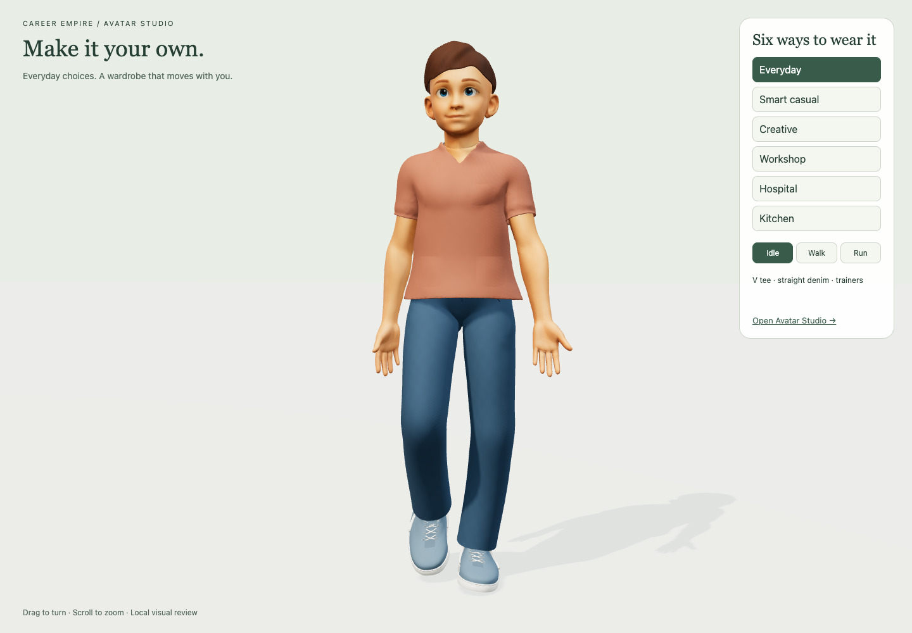
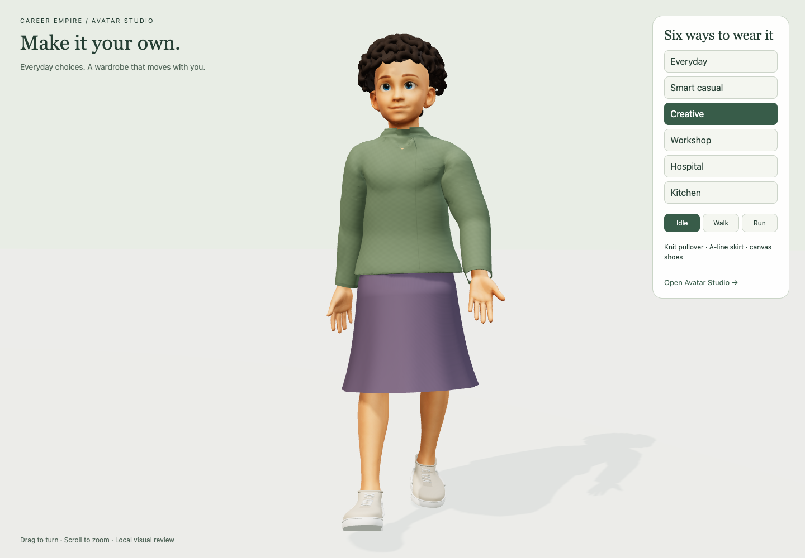

Avatar Studio visual quality upgrade — 29 September 2026
CE-CHANGE-20260929-99. Implemented locally on feat/avatar-quality-20260929, based on the verified PR42 merge 04ee10c. Current candidate is at /Users/tania.byrnes/Documents/Codex/2026-09-29/referenced-chatgpt-conversation-this-is-an/work/avatar-quality. Separate opening-recovery gameplay remains untouched. This is a local visual candidate, not a deployment or Tania appearance acceptance.
Visual review rejected — Tripo reference correction
Tania reviewed the first pass and said it was still poor; the imported Tripo avatars establish the required clothing quality. This supersedes the earlier pending-review status. Technical checks remain valid for that candidate, but do not establish visual quality or acceptance. Do not publish or expand its variants as an accepted art direction.
Direct local inspection covered player-schoolboy-2k-20260914.glb, mr-middleton-20260917.glb and mr-psandodakis-20260917.glb. Their visible strengths are layered shirt/knit/blazer construction, shaped shoulders and fitted torso, lapel roll and collar thickness, purposeful elbow/waist/knee folds, trouser taper and break over shoes, and integrated colour/shadow detail. The first pass is too uniformly smooth, inflated and mechanically cut; micro-weave shading cannot supply missing tailoring or drape.
The next implementation should establish one complete reference-quality outfit on the retained canonical body before multiplying styles. Retain rig, animation, save/loading and UI foundations. Rework visible garment geometry and mapped surface detail as needed: shoulder/sleeve construction, folds at tension/compression points, hems/cuffs/seams, believable waist/crotch/knee/ankle profiles and shoe construction. Existing Tripo meshes are reference/source candidates; do not assume a whole clothed character is detachable or fits the canonical body without segmentation, adaptation and movement checks. Compare the result with the actual imported assets at matching scale and lighting. No new clothing revision or equivalence to Tripo is claimed by this reference inspection.
Retained
The canonical base, original skeleton/inverse binds, native idle/walk animation, original garments, neutral base coverage, normalised height, saved profile key and existing Studio/world flow are retained. All 18 original avatar/wardrobe files inspected are byte-identical to the baseline. Running uses the existing walk animation at movement-driven speed; no replacement rig or new animation clip was introduced.
Implemented range
| Category | Before | Now | Additions and changes |
|---|---|---|---|
| Tops | 4 | 8 | Clean V tee, short-sleeve Oxford, denim overshirt finish, knit pullover; occupational collar, pocket and closure details retained |
| Bottoms | 4 | 8 | Straight denim, chinos, knee shorts and A-line skirt; original waist/belt/pocket geometry reused where appropriate |
| Hair | 4 | 8 | Layered sweep, sculpted curls, side-part bob and ponytail refined; crop, rounded afro, shoulder waves and wound low bun added |
| Shoes | 4 | 6 | Fabric/leather/rubber differentiation across trainers, boots, dress shoes and clogs; canvas low-tops and penny-strap loafers added |
Thirty selectable styles, excluding off/base-layer options. Clothing has no gender restrictions. The exact existing base identity is retained; this does not add alternative body shapes or skin-tone editing for the fitted base.
Fabric weave/twill/knit, leather grain and hair strands use stable rest-space procedural shading with distance filtering. No additional image textures or network services. Existing map/rig data and colour choices remain. Added real model thumbnails, six quick colour swatches and sticky category controls. All existing colours and new per-style colours save under the existing browser-local schema.
Denim/chinos share one geometry download; work shirt/denim overshirt share the original shirt geometry. Only selected models load; retries and rapid-choice protection remain. Twenty delivery GLBs total 18.83MiB across the entire optional range, not the initial load. Original assets remain in place for history and rollback.
Verification and limits
93 unit checks pass. Seven scoped browser scenarios pass: all 30 choices, stable body scale, selected-only downloads, mesh-source reuse, shader validity, save/reload, failed-download retry, rapid selection, undo, actual walking/running in the world, six rendered review outfits and phone portrait/landscape controls. The review fixture initially expected a helper picker on the standalone review page; that test-only fixture mismatch was corrected and rerun successfully.
Fit defects found during development were corrected: inner sleeve remnants, crop scalp clipping, longer-hair collar crossings and skirt hand/stride clearance. Final finite-edge checks show zero crossings in the corrected subset at rest plus 16 native gait samples. Prior full-candidate checks show zero body crossings for the unchanged models. This is sampled evidence, not a continuous swept-volume test or proof of every one of the 3,072 mix-and-match combinations. Hair-to-collar and skirt-to-tee checks are explicit. Shoe-to-denim pairs were checked in the wider run. All exported vertices are weighted; maximum four influences; compatible bone names and small float-roundtrip bind differences.
No known crossing remains in the final sampled cases. Physical phones, sustained school-device performance, student acceptance and exhaustive outfit combinations remain unverified. No full-repository CI, hosted CI, merge or deployment pass is claimed. A short preview frame rate is not a benchmark.
Measured review scenes contain 128,011–146,195 rendered triangles and 11–20 draw calls, including the ground. These are scene counts, not sustained frame-rate measurements.
Final project-check boundaries: all 93 unit tests pass. The broad game check cannot complete in this space-saving checkout because unchanged EST Assets are excluded by sparse checkout. Blueprint continuity and TypeScript checks pass; the full Blueprint test stops at the existing unrelated CE-CHANGE-20260929-97 field assetIdentityClarification, which its schema does not accept. The new task record and integration validate independently.
Review and handoff
Six complete looks · Avatar Studio
These local links require this task's preview server. Actual screenshots and a portable patch are supplied in the task outputs. Build recipes and receipts are under tools/wardrobe/quality. Canonical evidence: private/production-evidence/2026-09-29/avatar-quality/. Preserve unrelated active work when integrating this candidate.
The Blueprint start scan reported 270 pending intake items, 41 incomplete integrations and 14 coverage failures; continuity passed. Those inherited project-wide issues are not resolved by this wardrobe task. The new record, avatar roadmap, asset inventory, agent guidance and local reader exports are updated; public Blueprint publication remains separate.
Actual local renders


Direct asset inspection: the complete school student has 19,774 triangles and 2K base-colour/normal images; the teachers have 23,856 and 24,566 triangles with 2K mapped surfaces. This reinforces that authored shape and mapped detail, rather than simply more polygons or fine procedural noise, set this quality benchmark. Counts are source-mesh totals, not directly equivalent to render-pass scene metrics.
Tania clarified the primary visual references: Nora, NPC 1–5, Sam, Mara, Dev, Kenji and Amina. These named characters supersede the assistant-selected school student/teacher examples as the primary benchmark. Sam and Mara delivery files and the NPC source mapping are confirmed in market-npcs/build-receipt.json; this clarification does not claim all named sources have yet been visually inspected.
Work-shirt master study — visual gate failed
Continued the existing work-shirt master after Tania agreed to refine the original masters. Built a separate top-work-master.glb with local elbow/waist fold ridges and fitted placket stitching; original 21,170 garment vertices retain their weights. Added 1,088 stitch vertices. Body, skeleton, collar, cuff and pocket construction remain retained. Original source unchanged. Study is selected only by wardrobe-review.html?master=work; normal game wardrobe loading remains unchanged.
The source rig and all weights validate; sampled rest plus 16 walk poses show zero body-edge crossings. One scoped browser comparison passes, including explicit delivery of the candidate, idle/walk/run controls and screenshots. These are technical checks only. Actual screenshot review FAILED the intended visual quality gate: angular collar, insufficient fabric construction and an overall smooth/simple appearance remain. Do not derive more variants or promote this candidate. This attempt does not establish the ability to author a high-quality master. A proper sculpted/pattern-authored construction pass remains necessary; no bulk-quality workflow has been demonstrated.
Avatar wardrobe research, 29 September 2026: source-backed review confirms modular animated clothing is an established workflow. Preserve current body/rig/runtime and existing masters; inspect editable garment sources and mapped-detail/export pipeline instead of repeating minor vertex tweaks. Proposed MD/EveryWear/Blender production route is not new interoperability proof. Layer masking is a documented option, not implemented. See avatar-wardrobe-production-research-20260929.md. Research only; no purchase or deployment.
Production-source audit and practical proof, 29 September 2026 (CE-CHANGE-20260929-99): located original Blender masters and native T-shirt/pants archives. Built draped scrub source plus 1K map and recovered/rigged static jacket. Scrub passes 17 sampled body-crossing cases; jacket remains failed (max398 edge crossings after corrections). 93 units and two scoped browser cases pass but do not establish appearance acceptance. No bulk variants promoted; no live change. Native pattern-editing continuation awaits Marvelous Designer installation location. See docs/production/garment-production-proof-20260929.md (Blueprint) or docs/garment-production-proof-20260929.md (game).